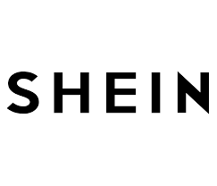

page 4:
page 3
page 5
history of PLT
Shein  |
Known for selling inexpensive apparel, Shein's success has been known its popularity among Generation Z
consumers. The company was firstly compared to a shipping company, as it was not involved in design before, instead
sourcing products from the wholesale clothing market in Guangzhou. starting in 2012, Shein began to form its own supply chain
system, developing itself into a fully integrated retailer. The company has established its supply chain in Guangzhou with a network
of more than 3,000 suppliers as of 2022. In 2022, the company fully moved its headquarters from China to Singapore for financial reasons,
while keeping its supply chains and warehouses in China In 2022.
|